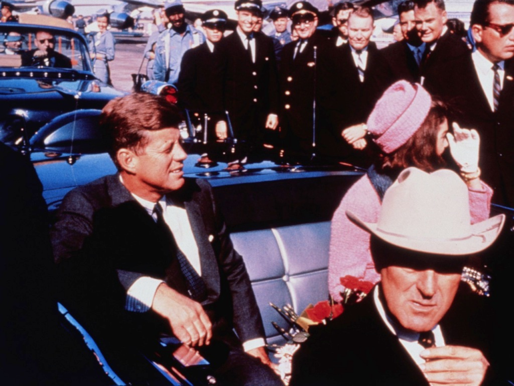
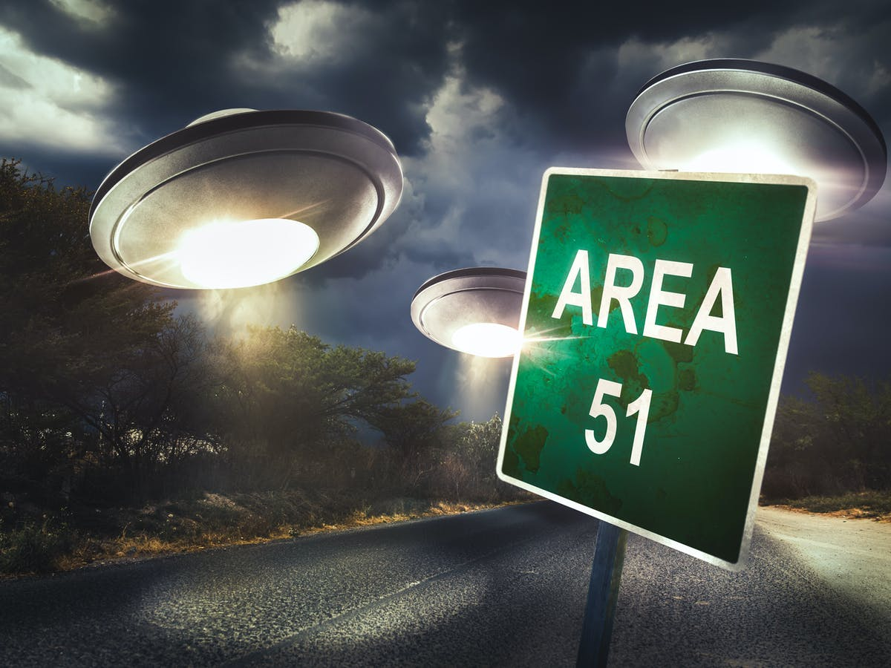
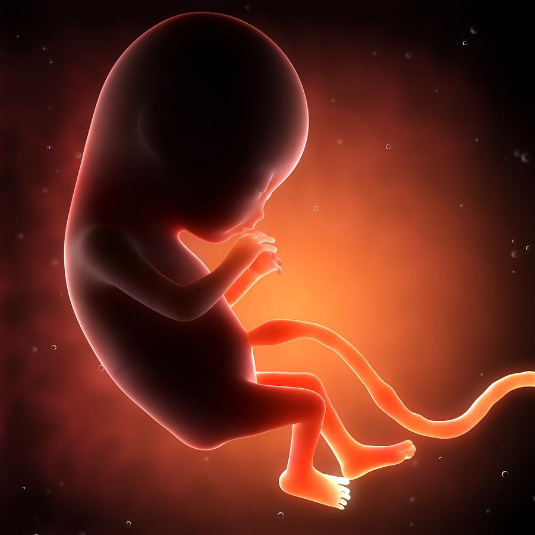

Conspiracy Theories
Illuminati
The word is the plural of the Latin illuminatus (“revealed” or “enlightened”) Illuminati has been the answer to conspirators' answer to assasination attempts, the music industry and all other unanswered questions. Over 200 years ago it was founded "to oppose religious religious influence on society and the abuse of power by the state by fostering a safe space for critique, debate and free speech." In 1785 Duke of Bavaria, Karl Theodore banned secret societies. Completely eliminating the original organization.
Tupac is alive
Tupac was shot September 7 1996 and died 6 days later on the 13. Since his death, it was hard for the public to believe that the rapper who inspired so many was truly gone. one of the most popular theories revolving around Tupacs death, is he knew of the assassination plan and switched with a body double and is now living in Cuba with Assata. One of the reasons people believe Tupac is still residing on this Earth, is his friend's and families' haven't of denied these theories outright.
The JFK Assassination
A 2003 ABC News poll found that 70% of Americans believe Kennedy's death was the result of a broader plot. The trajectory of the bullets, some say, didn't square with Oswald's perch on the sixth floor of the Texas School Book Depository. Others suggest a second gunman — perhaps on the grassy knoll of Dealey Plaza — participated in the shooting.
Area 51 and the Aliens
Conspiracy theorists believe that the remains of crashed UFO spacecrafts are stored at Area 51, an Air Force base about 150 miles from Las Vegas, where government scientists reverse-engineer the aliens' highly advanced technology. Fodder for this has come from a variety of supposed UFO sightings in the area and testimony from a retired Army colonel who says he was given access to extraterrestrial materials gathered from an alien spacecraft that crashed in Roswell, N.M. Some believe that the government studies time travel at Area 51, also known as Groom Lake or Dreamland.
Harry Truman Alien cover-up
In 1947 there was a supposed crash and Alien spacecraft outside Rosewell, New Mexico. It is believed that President Truman operated a secret group called "Majestic 12" filled with scientists, military, and government officials to keep the discovery of aliens a secret from society, having this information passed down through every presidency.
Apollo landing was fake
Doubters say the U.S. government, desperate to beat the Russians in the space race, faked the lunar landings, with Armstrong and Buzz Aldrin acting out their mission on a secret film set, located (depending on the theory) either high in the Hollywood Hills or deep within Area 51. With the photos and videos of the Apollo missions only available through NASA, there's no independent verification that the lunar landings were anything but a hoax.
Fetus farming
 One of the darker conspiracy theories to come out in the past few years is the allegations of Planned parenthood conspiring to harvest baby organs to the black market
as well as U.S Tax-funded research companies. According to "Lifenews" article on Planned parenthood leaders admitting under oath that they have harvested body parts
from fetuses that were still alive during an abortion. One of the quoted testimonies in the article came from
"Jon Dunn, CEO of Planned Parenthood of Orange & San Bernardino Counties in California. His affiliate used to work with the fetal tissue companies DaVinci
Biosciences and DV Biologics, which were shut down in 2017 after the Orange County District Attorney accused them of illegally selling aborted baby body parts.
The companies agreed to close permanently and pay $8 million in a settlement "
while there are many questions yet to be answered on this bizarre conspiracy, the unknown only seems to fuel conspiracy theorists.